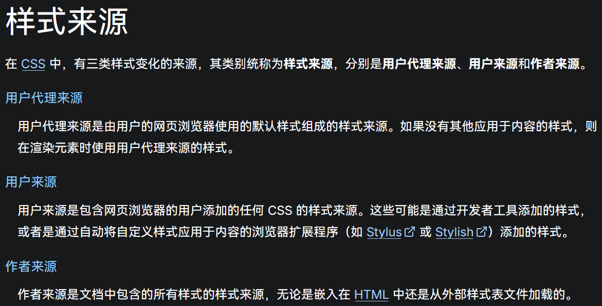
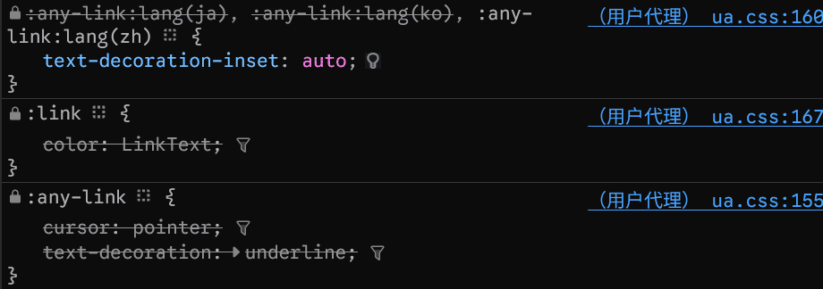
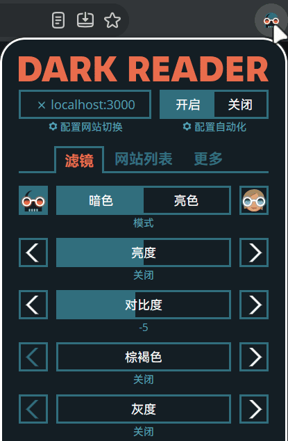
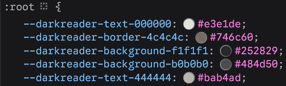
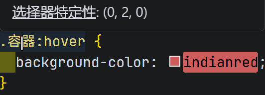
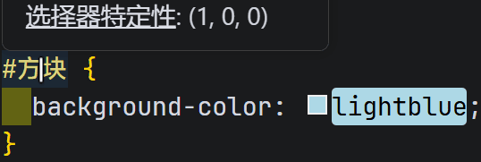
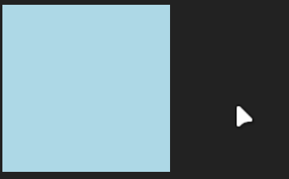

层叠与继承原创
作者： 苏扬
日期： 2026年11月11日

作者： 苏扬
日期： 2026年11月11日
层叠用来解决多个CSS规则应到到同一个元素的同一个属性时，如何决定最终生效的CSS规则。
比如，下列代码对span元素应用了多个CSS规则，每条规则都设置了color属性。
span#magic-span.fancy:hover {
color: #6b21a8;
}
span.highlight[data-role="demo"]:focus-visible {
color: #b45309;
}
span.glow:nth-of-type(1):active {
color: #f59e0b;
}
div.card:has(> p > span:hover)::before span {
color: #c026d3;
}
p.container:focus-within::after span {
color: #1e3bcb;
}
section:not(.empty) > div.card span {
color: #2bb1b6;
}
最后span的文本是什么颜色呢？这个时候就会使用层叠来决定最终生效的CSS规则。
层叠由3个因素组成，优先级从高到低：
样式来源有3种：

3种来源简介如下：

当作者和用户没有指定样式时，浏览器会对页面元素的每一个CSS属性应用一个默认样式，即用户代理样式。


Dark Reader是一个让页面变成深色模式的浏览器扩展，它产生的样式就叫用户样式。
重要声明比较简单，即CSS代码中是否包含!important标志。
选择器 {
属性: 值; /* 普通声明 */
属性: 值 !important; /* 重要声明 */
}
以下是来自MDN官网的提示：
结合样式来源和重要声明，优先级降序排列如下：
可以看出，如果没有!important，则程序员编写的CSS样式作者样式优先级最高。
如果重要性无法分出结果，就要比较样式的特定性。特定性由4个10进制数字组成：
| 内联样式 | ID | 类、属性、伪类 | 元素、伪元素 |
|---|---|---|---|
|
内联样式：1 普通样式：0 |
1/个 | 1/个 | 1/个 |
特定性4个数字并非比较它们的总和，而是从左到右依次比较，只要能分出结果，就不再比较右边的数字。
*、+、>、~、:where()不影响特定性。
:not()和:is()本身对特定性没有影响，但它们的参数则会带来影响。参数的特定性最大值将作为该伪类选择器的特定性。
如果都是普通样式，那么特定性就只看后3位，试看如下案例：
/* 特定性：1,5,3 */
div#page .content > article[ready="true"]:not(.draft, table):first-child h2.title {
color: #64c;
}
:not(.draft, table)这一段，:not本身对特定性没有影响，但是其内部参数.draft, table对特定性有影响，并且取影响的最大值而非总和。.draft是类，位于特定性第2位；table是元素，位于特定性第1位。第2位优先级高于第1位，因此:not(.draft, table)的特定性就是.draft的特定性。
下面用一个简单的案例来说明特定性的比较规则：
<div class="容器" id="方块"></div>
/* 类：1个（.容器）；伪类：1个（:hover）*/
/* 特定性：0,2,0 */
.容器:hover {
background-color: indianred;
}
/* ID：1个（#方块）*/
/* 特定性：1,0,0 */
#方块 {
background-color: lightblue;
}


特定性1,0,0要优先于0,2,0，因此这个元素在鼠标悬停时是不会改变背景色的。

如果两个选择器的特定性数值相同，则看源代码的书写顺序。后面的覆盖前面的。
/* 特定性：030 */
.文章.社会新闻.已定稿 {
color: white;
}
/* 特定性：030，此选择器最终生效 */
.文章.社会新闻[状态="审核中"] {
color: gray;
}
至此，层叠优先级一定能分出结果，确定最终生效的选择器。
当一个CSS属性没有指定值时，根据此属性的类型，会做不同处理：
举个例子，color为继承属性，border为非继承属性。
我们可以通过4个属性来控制继承：